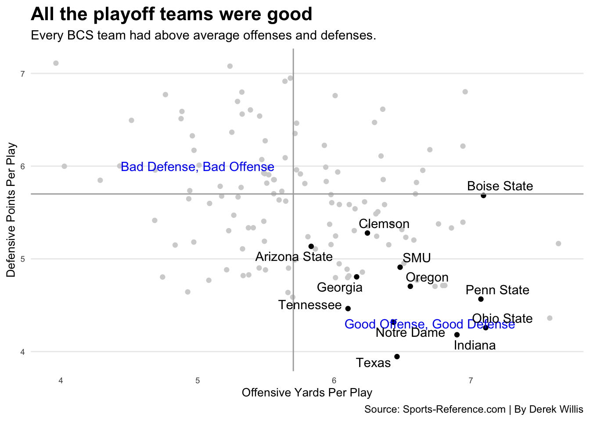

library(tidyverse)
library(ggrepel)32 Annotations
Some of the best sports data visualizations start with a provocative question. How about this one: Who really belongs in the college football playoffs and why is it never Notre Dame?
For this, we’re going to go back to some code we started in Bubble Charts and we’re going to add some annotations to it. Annotations help us draw attention to things, or help the reader understand what they’re looking at. They’re labels on things, be that the teams we want to highlight or regions of the chart or lines or all of those things.
For this, we’ll need to add a new library to the mix called ggrepel. You’ll need to install it in the console with install.packages("ggrepel").
Now we’ll grab the data, each football game in 2021.
For this walkthrough:
Now load it.
logs <- read_csv("data/footballlogs22.csv")Rows: 1672 Columns: 54
── Column specification ────────────────────────────────────────────────────────
Delimiter: ","
chr (8): HomeAway, Opponent, Result, TeamFull, TeamURL, Outcome, Team, Con...
dbl (45): Game, PassingCmp, PassingAtt, PassingPct, PassingYds, PassingTD, ...
date (1): Date
ℹ Use `spec()` to retrieve the full column specification for this data.
ℹ Specify the column types or set `show_col_types = FALSE` to quiet this message.I’m going to set up a point chart that places teams on two-axes – yards per play on offense on the x axis, and yards per play on defense. We did this in the bubble charts example.
logs |>
group_by(Team, Conference) |>
summarise(
TotalPlays = sum(OffensivePlays),
TotalYards = sum(OffensiveYards),
DefensivePlays = sum(DefPlays),
DefensiveYards = sum(DefYards)) |>
mutate(
OffensiveYPP = TotalYards/TotalPlays,
DefensiveYPP = DefensiveYards/DefensivePlays) -> ypp`summarise()` has grouped output by 'Team'. You can override using the
`.groups` argument.To build the annotations, I want the average for offensive yards per play and defensive yards per play. We’re going to use those as a proxy for quality. If your team averages more yards per play on offense, that’s good. If they average fewer yards per play on defense, that too is good. So that sets up a situation where we have four corners, anchored by good at both and bad at both. The averages will create lines to divide those four corners up.
averages <- ypp |> ungroup() |> summarise(AvgOffYardsPer = mean(OffensiveYPP), AvgDefYardsPer = mean(DefensiveYPP))
averages# A tibble: 1 × 2
AvgOffYardsPer AvgDefYardsPer
<dbl> <dbl>
1 5.70 5.55I also want to highlight playoff teams.
playoff_teams <- c("Texas Christian", "Georgia", "Michigan", "Ohio State")
playoffs <- ypp |> filter(Team %in% playoff_teams)Now we create the plot. We have two geom_points, starting with everyone, then playoff teams. I alter the colors on each to separate them. Next, I add a geom_hline to add the horizontal line of my defensive average and a geom_vline for my offensive average. Next, I want to add some text annotations, labeling two corners of my chart (the other two, in my opinion, become obvious). Then, I want to label all the playoff teams. I use geom_text_repel to do that – it’s using the ggrepel library to push the text away from the dots, respective of other labels and other dots. It means you don’t have to move them around so you can read them, or so they don’t cover up the dots.
The rest is just adding labels and messing with the theme.
ggplot() +
geom_point(data=ypp, aes(x=OffensiveYPP, y=DefensiveYPP), color="light grey") +
geom_point(data=playoffs, aes(x=OffensiveYPP, y=DefensiveYPP)) +
geom_hline(yintercept=5.7, color="dark grey") +
geom_vline(xintercept=5.7, color="dark grey") +
geom_text(aes(x=6.7, y=4.3, label="Good Offense, Good Defense"), color="blue") +
geom_text(aes(x=5, y=6, label="Bad Defense, Bad Offense"), color="blue") +
geom_text_repel(data=playoffs, aes(x=OffensiveYPP, y=DefensiveYPP, label=Team)) +
labs(x="Offensive Yards Per Play", y="Defensive Points Per Play", title="All four playoff teams were good", subtitle="Three of the four have above average offenses and defenses.", caption="Source: Sports-Reference.com | By Derek Willis") +
theme_minimal() +
theme(
plot.title = element_text(size = 16, face = "bold"),
axis.title = element_text(size = 10),
axis.text = element_text(size = 7),
axis.ticks = element_blank(),
panel.grid.minor = element_blank(),
panel.grid.major.x = element_blank()
)